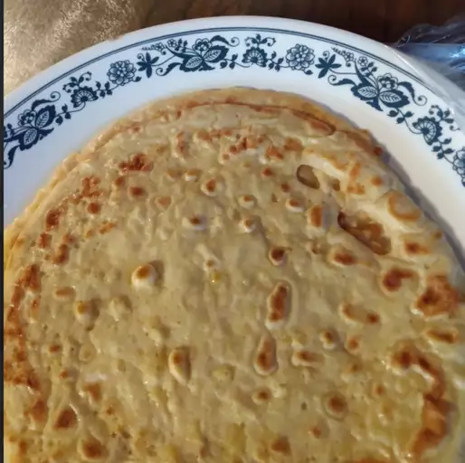

Basic Crepes Recipe

Are you intimidated by the thought of making crêpes at home? Don't be!
This crêpe recipe yields perfectly delicate, tender results every time.
-
Flour: These basic French crêpes start with a cup of all-purpose flour.
-
Eggs: Eggs act as a binder, which means they help hold the batter
together.
- Etc..
- Whisk the flour and eggs.
- Gradually add the milk and water.